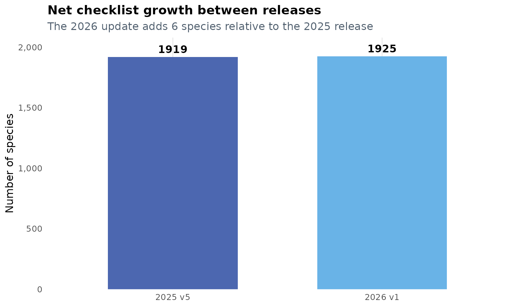
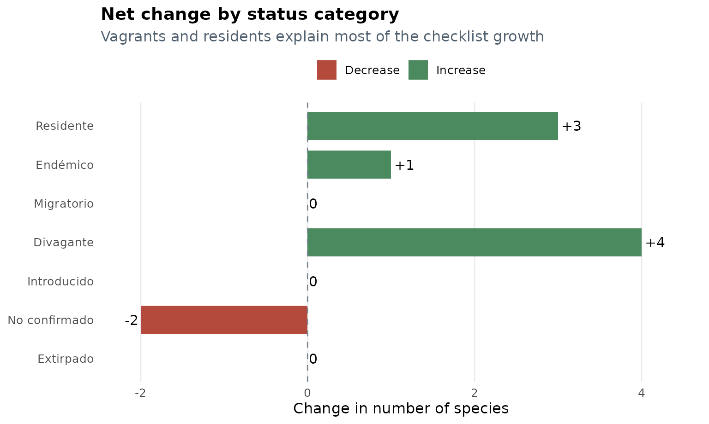
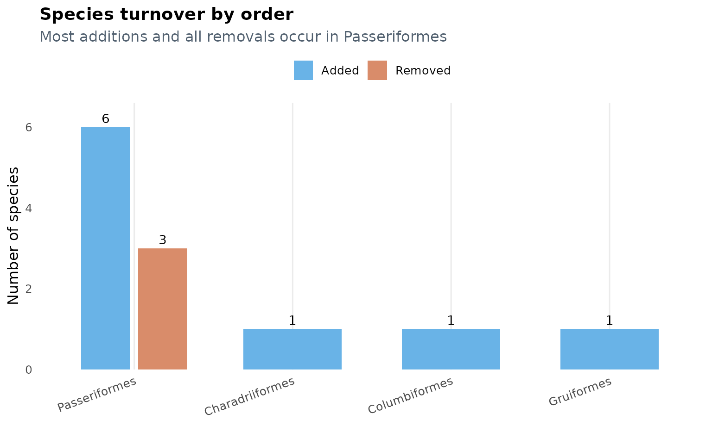
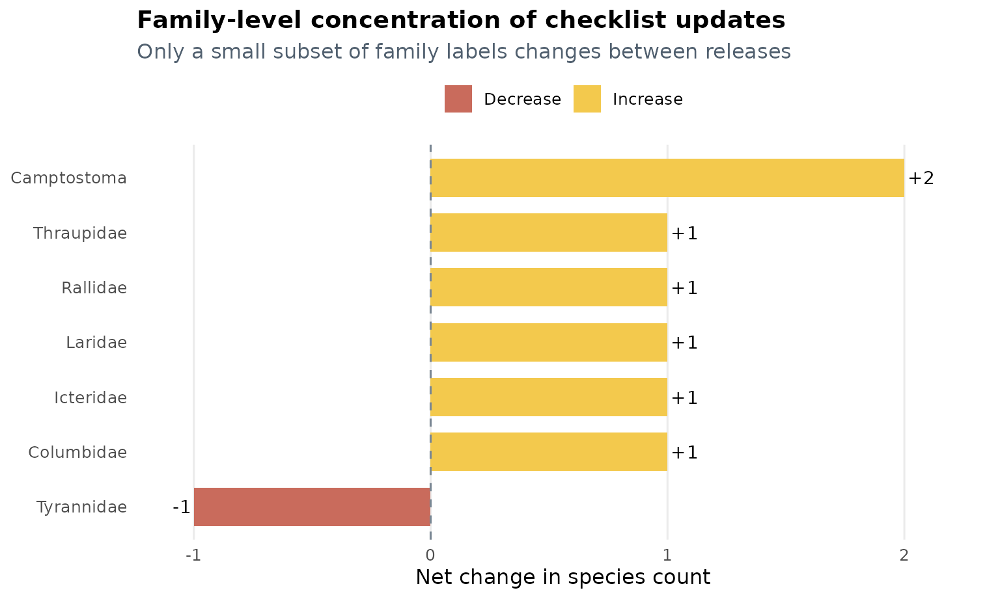

Introduction
This vignette compares the two most recent checklist objects shipped
with avesperu: aves_peru_2025_v5 and
aves_peru_2026_v1.
The goal is not only to show that the dataset changed, but also to answer four practical questions:
- How large was the update?
- Which status categories changed the most?
- Which species entered or left the checklist?
- Where are the changes concentrated taxonomically?
Between 29 de diciembre de 2025 and 23 de marzo de 2026, the checklist grew from 1919 to 1925 species. That is a net gain of 6 species.
At the same time, the overall structure of the database remained highly stable: 1916 species are shared by both versions, which means that 99.84% of the 2025 checklist was retained in the 2026 release.
1. High-level snapshot
The first table summarizes the scale of the update. It shows that the number of orders remained constant, while the number of family labels increased slightly.
knitr::kable(summary_tbl, caption = "High-level comparison of the two checklist versions")| dataset | version_date | species | orders | families |
|---|---|---|---|---|
| aves_peru_2025_v5 | 29 de diciembre de 2025 | 1919 | 32 | 90 |
| aves_peru_2026_v1 | 23 de marzo de 2026 | 1925 | 32 | 91 |
summary_plot_tbl <- summary_tbl
summary_plot_tbl$release <- c("2025 v5", "2026 v1")
ggplot(summary_plot_tbl, aes(x = release, y = species, fill = release)) +
geom_col(width = 0.62, color = NA) +
geom_text(aes(label = species), vjust = -0.5, fontface = "bold", size = 4.2) +
scale_fill_manual(values = c("2025 v5" = "#4C67B0", "2026 v1" = "#69B3E7")) +
scale_y_continuous(
expand = expansion(mult = c(0, 0.08)),
labels = scales::comma
) +
labs(
title = "Net checklist growth between releases",
subtitle = "The 2026 update adds 6 species relative to the 2025 release",
x = NULL,
y = "Number of species"
) +
plot_theme +
theme(legend.position = "none")
This graphic is useful as a first check for reproducibility: the update is not a complete restructuring of the package data, but a focused revision with a small and traceable net increase.
2. Changes in status composition
The net increase is not distributed evenly across status categories.
Most of the change is concentrated in Divagante,
Residente, and Endémico, while
No confirmado decreases.
knitr::kable(status_tbl, caption = "Species counts by status in each dataset version")| status | n_2025 | n_2026 | change |
|---|---|---|---|
| Residente | 1549 | 1552 | 3 |
| Endémico | 118 | 119 | 1 |
| Migratorio | 140 | 140 | 0 |
| Divagante | 86 | 90 | 4 |
| Introducido | 3 | 3 | 0 |
| No confirmado | 23 | 21 | -2 |
| Extirpado | 0 | 0 | 0 |
status_plot_tbl <- status_tbl
status_plot_tbl$direction <- ifelse(status_plot_tbl$change >= 0, "Increase", "Decrease")
status_plot_tbl$label <- ifelse(
status_plot_tbl$change > 0,
paste0("+", status_plot_tbl$change),
as.character(status_plot_tbl$change)
)
status_plot_tbl$status <- factor(status_plot_tbl$status, levels = rev(status_plot_tbl$status))
ggplot(status_plot_tbl, aes(x = status, y = change, fill = direction)) +
geom_col(width = 0.72) +
geom_hline(yintercept = 0, linetype = 2, color = "#7A8793") +
geom_text(
aes(
label = label,
hjust = ifelse(change >= 0, -0.15, 1.15)
),
size = 4
) +
coord_flip() +
scale_fill_manual(values = c("Increase" = "#4B8A5F", "Decrease" = "#B34A3C")) +
scale_y_continuous(expand = expansion(mult = c(0.08, 0.12))) +
labs(
title = "Net change by status category",
subtitle = "Vagrants and residents explain most of the checklist growth",
x = NULL,
y = "Change in number of species"
) +
plot_theme
Three patterns stand out:
-
Divaganteincreases by 4 species, the largest category-level change in the update. -
Residenteincreases by 3 species, showing that the revision is not restricted to occasional records. -
No confirmadodecreases by 2 species, suggesting that some previously uncertain records were either excluded or reclassified in the updated source.
3. Species turnover
The 2026 release adds 9 species and removes 3. Because the shared core remains so large, the update is best understood as a targeted revision rather than a replacement of the whole checklist.
Added species
knitr::kable(
added[, c("scientific_name", "english_name", "status", "family_name", "order_name")],
caption = "Species added in aves_peru_2026_v1"
)| scientific_name | english_name | status | family_name | order_name | |
|---|---|---|---|---|---|
| 112 | Columbina squammata | Scaled Dove | Divagante | Columbidae | Columbiformes |
| 336 | Fulica americana | American Coot | Divagante | Rallidae | Gruiformes |
| 408 | Anous stolidus | Brown Noddy | Divagante | Laridae | Charadriiformes |
| 1360 | Camptostoma sclateri | Pacific Beardless-Tyrannulet | Residente | Camptostoma | Passeriformes |
| 1361 | Camptostoma napaeum | Amazonian Beardless-Tyrannulet | Residente | Camptostoma | Passeriformes |
| 1504 | Tunchiornis ferrugineifrons | Western Tawny-crowned Greenlet | Residente | Vireonidae | Passeriformes |
| 1595 | Turdus phaeopygus | Gray-flanked Thrush | Residente | Turdidae | Passeriformes |
| 1680 | Icterus spurius | Orchard Oriole | Divagante | Icteridae | Passeriformes |
| 1753 | Sicalis columbiana | Orange-fronted Yellow-Finch | Residente | Thraupidae | Passeriformes |
Removed species
knitr::kable(
removed[, c("scientific_name", "english_name", "status", "family_name", "order_name")],
caption = "Species removed from the previous checklist version"
)| scientific_name | english_name | status | family_name | order_name | |
|---|---|---|---|---|---|
| 1357 | Camptostoma obsoletum | Southern Beardless-Tyrannulet | Residente | Tyrannidae | Passeriformes |
| 1500 | Tunchiornis ochraceiceps | Tawny-crowned Greenlet | Residente | Vireonidae | Passeriformes |
| 1591 | Turdus albicollis | White-necked Thrush | Residente | Turdidae | Passeriformes |
Some of these additions and removals are especially informative. For
example, the replacement of Camptostoma obsoletum by
Camptostoma sclateri and Camptostoma napaeum
is consistent with a taxonomic split in the source checklist. Likewise,
the replacement of Tunchiornis ochraceiceps and
Turdus albicollis by more specific taxa suggests an update
in species limits or taxonomic circumscription.
That interpretation is an inference from the before/after pattern in the data, not an explicit annotation embedded in the dataset itself.
turnover_plot_tbl <- rbind(
data.frame(order_name = turnover_by_order$order_name, movement = "Added", n = turnover_by_order$added),
data.frame(order_name = turnover_by_order$order_name, movement = "Removed", n = turnover_by_order$removed)
)
turnover_plot_tbl <- turnover_plot_tbl[turnover_plot_tbl$n > 0, ]
turnover_plot_tbl$order_name <- factor(
turnover_plot_tbl$order_name,
levels = turnover_by_order$order_name[order(turnover_by_order$net_change, decreasing = TRUE)]
)
ggplot(turnover_plot_tbl, aes(x = order_name, y = n, fill = movement)) +
geom_col(position = position_dodge(width = 0.72), width = 0.62) +
geom_text(
aes(label = n),
position = position_dodge(width = 0.72),
vjust = -0.45,
size = 3.8
) +
scale_fill_manual(values = c("Added" = "#69B3E7", "Removed" = "#D98C6A")) +
scale_y_continuous(expand = expansion(mult = c(0, 0.1))) +
labs(
title = "Species turnover by order",
subtitle = "Most additions and all removals occur in Passeriformes",
x = NULL,
y = "Number of species"
) +
plot_theme +
theme(axis.text.x = element_text(angle = 20, hjust = 1))
This plot shows that turnover is concentrated in
Passeriformes, which accounts for 6 of the 9 additions and
all 3 removals.
4. Where the taxonomic changes are concentrated
At a broad level, the checklist still contains 32 orders in both versions. The family layer changes more subtly, from 90 to 91 distinct family labels.
The next table isolates only the family labels whose counts changed.
knitr::kable(
family_delta,
caption = "Families with non-zero net change between versions"
)| family_name | n_2025 | n_2026 | change | |
|---|---|---|---|---|
| 89 | Tyrannidae | 251 | 250 | -1 |
| 19 | Columbidae | 30 | 31 | 1 |
| 39 | Icteridae | 34 | 35 | 1 |
| 41 | Laridae | 30 | 31 | 1 |
| 68 | Rallidae | 30 | 31 | 1 |
| 81 | Thraupidae | 193 | 194 | 1 |
| 11 | Camptostoma | 0 | 2 | 2 |
family_plot_tbl <- family_delta
family_plot_tbl$direction <- ifelse(family_plot_tbl$change > 0, "Increase", "Decrease")
family_plot_tbl$label <- ifelse(
family_plot_tbl$change > 0,
paste0("+", family_plot_tbl$change),
as.character(family_plot_tbl$change)
)
family_plot_tbl$family_name <- factor(
family_plot_tbl$family_name,
levels = family_plot_tbl$family_name
)
ggplot(family_plot_tbl, aes(x = family_name, y = change, fill = direction)) +
geom_col(width = 0.7) +
geom_hline(yintercept = 0, linetype = 2, color = "#7A8793") +
geom_text(
aes(
label = label,
hjust = ifelse(change > 0, -0.12, 1.12)
),
size = 3.8
) +
coord_flip() +
scale_fill_manual(values = c("Increase" = "#F3C94D", "Decrease" = "#C96B5C")) +
scale_y_continuous(expand = expansion(mult = c(0.08, 0.12))) +
labs(
title = "Family-level concentration of checklist updates",
subtitle = "Only a small subset of family labels changes between releases",
x = NULL,
y = "Net change in species count"
) +
plot_theme
Two practical takeaways emerge from this comparison:
- Most families do not change at all, which helps preserve compatibility with analyses built on the previous release.
- The largest localized revision occurs around the
Camptostomalabel, while several other families gain a single species.
5. What this means for users
For most workflows, the 2026 update is a refinement rather than a disruptive schema change. The implications are straightforward:
- If you are reproducing an analysis built with
aves_peru_2025_v5, most names remain unchanged and directly comparable. - If your data include any of the removed species, you should re-run
matching with
search_avesperu()to align them with the current checklist. - If you work with vagrants, endemics, or recent country records, the 2026 release is especially relevant because these are the categories with the most visible shifts.
In short, aves_peru_2026_v1 preserves continuity with
the previous checklist while incorporating a small but meaningful set of
taxonomic and occurrence updates.